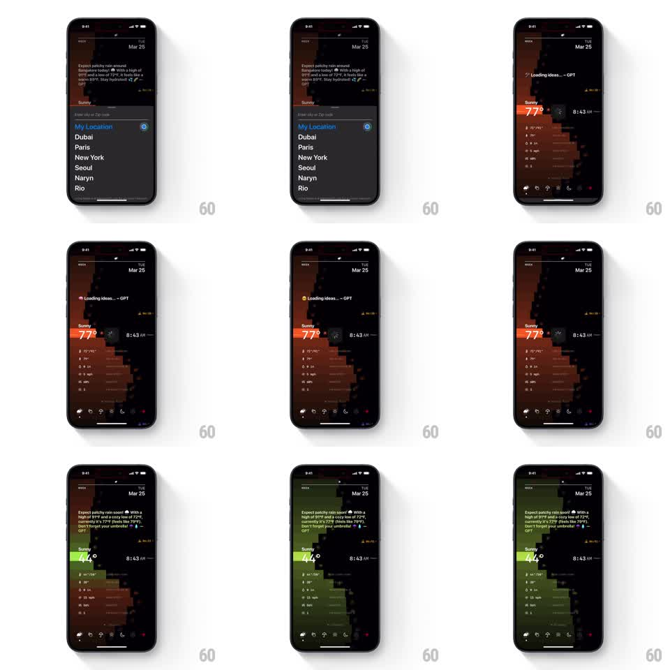

Media
Frame-by-frame

Rebuild this interaction 1:1: Lume's location picker - choosing a city from the bottom sheet collapses it with a pulse, fires a "Loading ideas... - GPT" pill, and re-themes the whole dashboard (pixel landscape, temperature, accents) to the new location.

Rebuild this interaction 1:1: Lume's location picker - choosing a city from the bottom sheet collapses it with a pulse, fires a "Loading ideas... - GPT" pill, and re-themes the whole dashboard (pixel landscape, temperature, accents) to the new location.
## Integration
Integration: stack-agnostic spec - springs given as stiffness/damping, timed motions as duration + curve; map every value to your framework and animation library of choice.
## Scene
Dashboard with a location sheet over it: a "Sunny" row, search field ("Enter city or Zip code"), and a list ("My Location" with a location icon, Dubai, Paris, New York, Seoul, Naryn, Rio). After picking, the sheet collapses, a "Loading ideas... - GPT" pill appears over the pixel landscape, and the dashboard re-themes - e.g. warm orange 77° scene shifting to a green 44° scene.
## Motion spec
Pattern: collapsing sheet with a theme pulse.
- Tap a location: the row highlights (accent flash, 150ms) and the sheet collapses downward (spring ~300/24, 300ms), its content fading in the last 150ms.
- As the sheet passes mid-collapse, the dashboard emits a pulse: a ring expands from the screen center (scale 0 -> 2.2, 500ms, fade out) in the NEW location's accent color.
- The loading pill slides in from the top of the landscape area (spring ~340/18) and pulses its ellipsis.
- The pixel landscape re-renders region by region (horizontal bands, 60ms stagger, top to bottom) into the new palette; the temperature rolls to the new value (250ms); stat rows refresh with a downward stagger (30ms each).
- Loading completes: the pill slides up and out (250ms) and the summary line types its update.
## Calibration
- The pulse color previews the incoming theme before the landscape changes - it is the promise, the bands are the delivery.
- Sheet collapse and pulse overlap: pulse starts at ~50% of the collapse.
## Reduced motion
Sheet fades out; theme crossfades (400ms); no ring.
## Don't miss
- "My Location" keeps its filled location icon; plain text rows for cities.
- The bottom tab bar's accent follows the new theme immediately, not after loading.